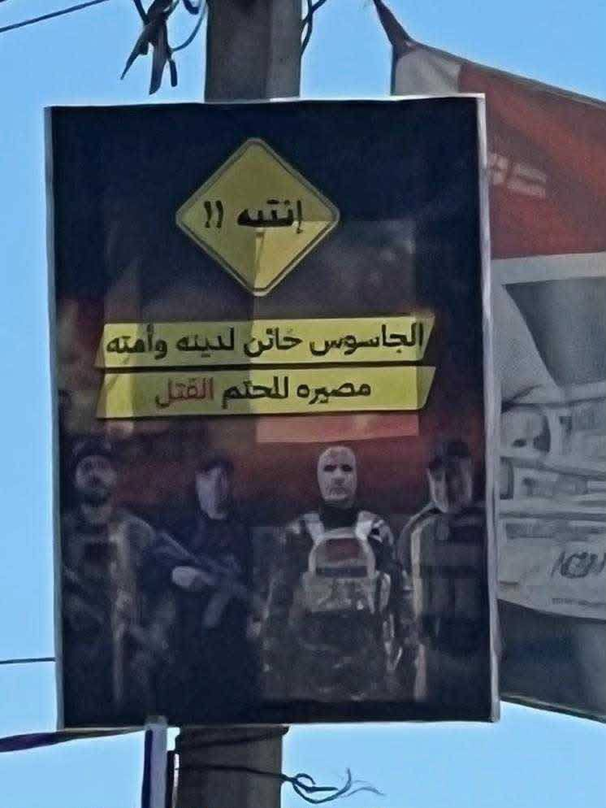

معالجات اخبارية
3 مليارات شيقل ديون على السلطة.. ماذا جرى في ملف المحروقات؟
تتجه السلطة إلى تأسيس شركة جديدة تابعة لـ”ياسر عباس”، تتولى شراء المحروقات وتخزينها، على أن يقتصر دور هيئة البترول على الإشراف..
معالجات اخبارية
تتجه السلطة إلى تأسيس شركة جديدة تابعة لـ”ياسر عباس”، تتولى شراء المحروقات وتخزينها، على أن يقتصر دور هيئة البترول على الإشراف..

معالجات اخبارية
أعلن مدير عام المكتب الإعلامي الحكومي إسماعيل الثوابتة أنه "في خطوة تعكس المسؤولية الوطنية، واستكمالًا لإجراءات نقل إدارة الحكم في قطاع غزة،..

معالجات اخبارية
كشفت القناة 15 العبرية تفاصيل لائحة اتهام تتعلق بشبكة واسعة لتهريب البضائع إلى قطاع غزة خلال الحرب، تضم فلسطينيين ومصريين..

معالجات اخبارية
أفادت مصادر فلسطينية مطلعة بأن السلطة الفلسطينية تحركت لدى إحدى الدول الخليجية لاتخاذ إجراءات بحق ناشطين فلسطينيين يقيمان فيه..

معالجات اخبارية
فريح أبو مدين لص الأراضي في غزة
 01
01 02
02 03
03 04
04 05
05
تحليلات واراء

تحليلات واراء

تحليلات واراء

تحليلات واراء

تحليلات واراء
تحليلات واراء

تحليلات واراء
تحليلات واراء

4 صور
 صورتان
صورتان صورتان
صورتان صورتان
صورتان صورتان
صورتانأبرز المعالجات الإخبارية والتحليلات والأرقام من شبكة الصحافة الفلسطينية، في بريدك.
يمكنك إلغاء الاشتراك في أي وقت.
على كل المنصات باسم @Palps_net